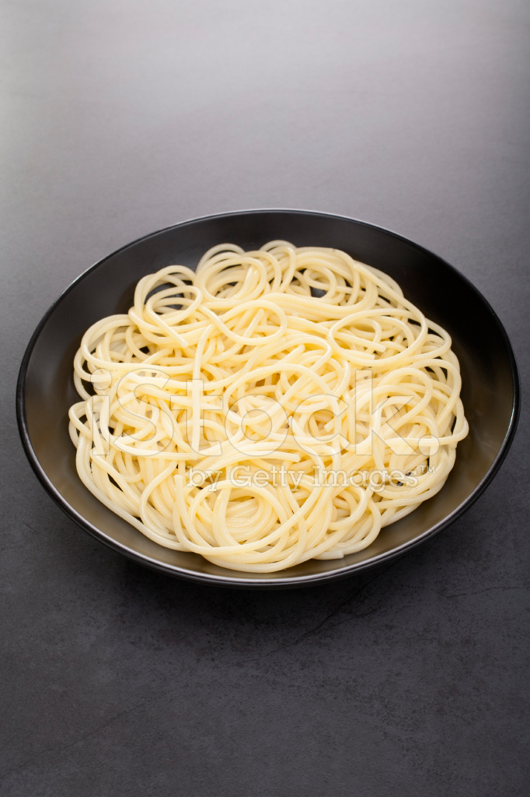

An Italian-American Favorite!

Making yummy spaghetti is easier than you think.
To make a bowl of spaghetti, you need a pot, a strainer, a spoon, and a stove.
Follow the recipe and you should not fail!
INGREDIENTS:
STEPS:
- Pour water in a pot
- Put water to a boil
- Put spaghetti into the pot
- Cook until soft
- Strain water
- Enjoy your perfect bowl of spaghetti!